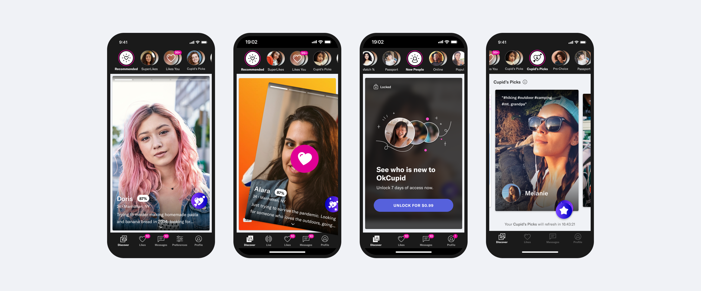

Stacks
Stacks is a collection of categories of people for users to sort through. While all users see the same Stacks, each user sees a unique set of people in each Stack based on their preferences and how they've answered questions. Aside from Recommended which shows unending numbers of people, all other Stacks show users up to 20 people a day and then refills the following day.
Stacks is a new way for OkCupid users to discover profiles. Besides giving users different streams of recommendations, this design also creates opportunity for OkCupid to offer premium experience for subscribers and marketing opportunities to show people who have strong interests in real-time topics such as Black Lives Matter and Pro-choice.

Context
OkCupid introduced Stacks in response to growing qualitative feedback that users wanted a more intentional and controlled way to connect. Previously, discovery was largely limited to a single browsing experience, contributing to swipe fatigue and leaving users feeling constrained by the algorithm, with little control over who they were shown. As a result, many struggled to find people they were genuinely interested in. Stacks reimagined discovery by organizing potential matches into distinct categories—such as compatibility, activity, and intent—giving users more agency to navigate based on what matters most to them. By consolidating multiple discovery paths into one flexible system, Stacks aimed to create a more focused, personalized, and meaningful way to explore matches.
Goal
The goal of Stacks was to create a more intentional and user-controlled discovery experience that moves beyond passive swiping. By introducing multiple, clearly defined pathways to explore matches, the feature aimed to reduce swipe fatigue, increase relevance in recommendations, and help users more easily find people aligned with their preferences and intentions. Additionally, Stacks sought to improve overall engagement and satisfaction by giving users greater transparency and influence over the matching experience, ultimately fostering more meaningful connections on the platform.
Impact
Product Snapshots